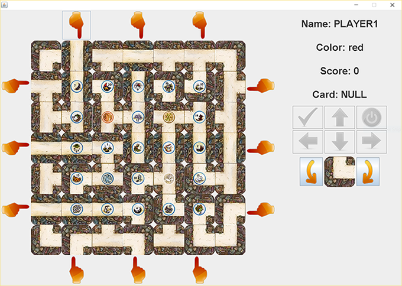
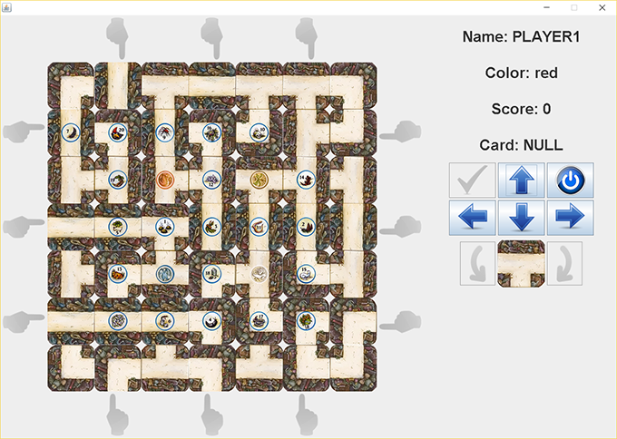
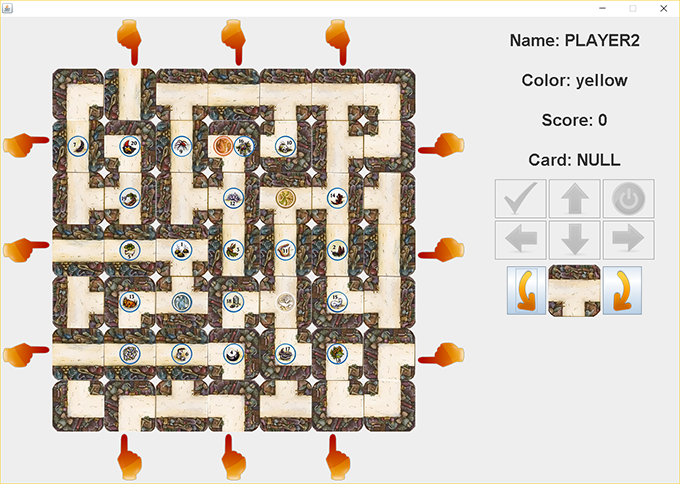
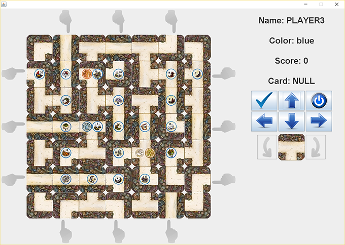
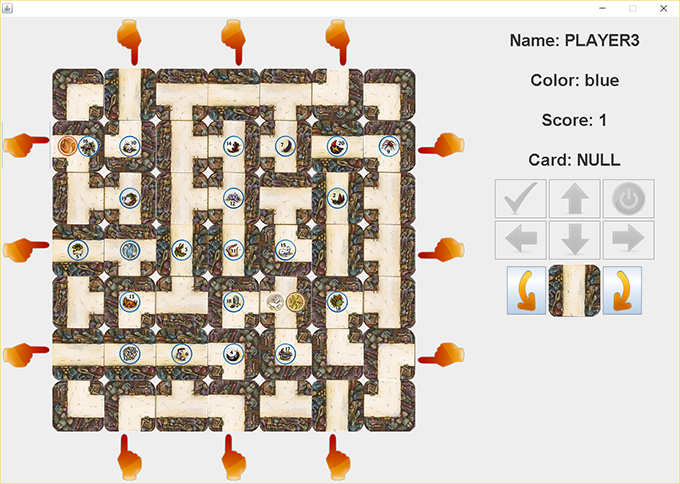

Game Master Labyrinth
- GUI Design
- Data structure use
- Algorithm for Random Tile Initialization
- Array
- ArrayList
- HashTable
- BST
- Stack
- Queue
- Deadline driven teamwork coding
- Programming communication skills
Funtionality and Instruction
This game is a traditional labyrinth game played with 2 or more people. The following is instructions for this game for your better understanding.
Our goal is to colon this game on computer, which requires both quality and clear interface and functional and enjoyable inner logic.
At first the game starts on a random game board. All tiles, except those 16 fixed one, are randomly placed on the board. Each type of tile follows certain number.
Tokens are also placed randomly on the center area. Every token is unique.
Players are placed on the fixed born spots.
The first player can rotate the tile clockwise and counterclockwise and then use pointer to insert the tile.
Then after the insertion, all the tiles and token on that row or column are pushed one step. The very last tile of that row or column was pushed out as a free tile for next player to rotate and insert.
Then player can move their pawn through available path and stop at any available spot after press the STOP button.
Next, player 2 just repeat the same rules as player1 to do the rotation, insertion and movement. One exception, the new player can’t insert tile into the spot that this tile was pushed out.
For each pawn, they can pick up token by pressing the check button, but only in order. Now the player3(blue) is accessible to token 1. Blue move onto the token 1 and the check button is turning blue from grey.
After press the button, the token was picked and the pawn end this turn automatically. Blue earns the value of this pawn, 1 point.
Only after all the token was picked, the result will be shown on the board and given the rank for every player.
What I got from this project
1. Programming design is a huge job, not only need to think about the current work, but also need to consider the future structure of this whole work. This project contains 4 layers of design. We started from basic tail and path to build the whole board. Design the pawn data and token data to connect each other and use GUI to display them all. Each layer is connected to others. Without thinking too much, at first we need to add a lot variable in each class to make them connected. However, when we reached the final stage we found out that the old design is not function and we can’t fix it, just because of the complexity of our class and layer connection. We then redesigned a data structure, use layer by layer connection to connect every unit. All things pipe up to build the whole board. Fortunately, the new design works perfect, even better than the other group.
2. Team work relays on communication. The better communication, the more efficiency. Communication covers the idea for the work, the inspiration for the problem and job assignment. Bad communication would result job overlapping, misunderstanding and even dissolution of the whole group. Clarification of the common work and the point that we want to reach together is important. Leader is also important in team discussion, who absorbs teammate’ ideas and avoiding wondering off the point.
3. Self-learning is also another important topic in this project. All the topic in this project are brand new to us. We need to use online resources, like search engine and online tutorial to find the resource we need. This is the key point of technician, learning things and use things immediately. I really enjoy this experience, this feeling. I’m proud of making new things.
Network Layer Routing Algorithm Implementation
- Establish Forwarding Table
- TCP UDP communication
- Command control
- Periodically Data Update Based on Software Timing
In this project, we initial more than 5 routers to establish a virtual network. Every router has a unique forwarding table and a value that represents the distance to its neighbor. The project goal is to write an algorithm for router to find the shortest path to every other router.
Function description
- Router need to send latest routing table to neighborhood to update their table
- Router need to accept and analysis incoming routing table to get the distance to every other router
- Router is able to receive incoming command and decompose attached data to response relevantly, for example: initialization, value update, disconnect to certain neighbor, and crush.
- Router is able to identify crushed path and find another route
- Router is able to forwarding file based on current routing table through TCP
What I got from this project
Dynamic network design requires a strong structure design. It not only requires establishing a solid base at first time, but also requires updating the whole structure when new data come in. the performance reflects in the speed of that reflection and the resource that this reflection and change cost. Good algorithm cost less and works quicker. Structure matters.
A Functional Chatting APP
- Application layer designe
- TCP connection
- Client APP functionality
- Login to the server
- Send message to another client
- Send files to another client
- Fetch the statistics from the server
- Hide them self from the other client
- Logout from the server
- Server APP functionality
- Accept login request from clients
- Pass message from one client to another one
- Gather data, such as IP, port number, username, message they sent and the number of messages
- Refresh data when client login or logout
- Mute clients
- Broadcast message
- Force client to logout
What I got from this project
The structure of Online chatting system and security thinking.
The first time touching chatting application. This big system bases on a strong server with various client terminal. All clients connect to serve so they can connect to each other indirectly, which means once the server crush, no one would work. A robust and efficient server design is the key to online chatting system.
What’s more, the server controls all the data that pass through it. All the clients are naked from the server’s perspective. Think deeper, the security of chatting system mainly means the security for the server.
In information age, security means a lot.
GoBang on ARM Cortex M3
- Embedded system design
- LandTiger V2.0 LPC1768 Development Board
- I/O programming and CAN design
- Digital Liquid-Crystal Screen Control
More details are in our project report
Control System of Optical Fiber Taper Machine
- Embedded System
- Hardware Timer and Software Timer Control
- Multiple Step Motor Control
- Tapered Fiber
- Arc Heat System
Tapered fibers are indispensable part of FOS(Fiber Optic Sensor). This machine utilizes Step Motors and Arc Heat System to process Optical Fiber. Using different input parameter, this system can produce fine tapered fiber with different radius and length.
This is my report about this system(IN CHINESE): Click Here